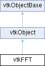

|
Etrek
|
|
Etrek
|
perform Discrete Fourier Transforms More...
#include <vtkFFT.h>

Classes | |
| struct | isFftType |
| struct | isFftType< vtkFFT::ScalarNumber > |
| struct | isFftType< vtkFFT::ComplexNumber > |
Public Types | |
| enum | Octave { Hz_31_5 = 5 , Hz_63 = 6 , Hz_125 = 7 , Hz_250 = 8 , Hz_500 = 9 , kHz_1 = 10 , kHz_2 = 11 , kHz_4 = 12 , kHz_8 = 13 , kHz_16 = 14 } |
| enum | OctaveSubdivision { Full , FirstHalf , SecondHalf , FirstThird , SecondThird , ThirdThird } |
| enum | Scaling : int { Density = 0 , Spectrum } |
| enum | SpectralMode : int { STFT = 0 , PSD } |
| using | ScalarNumber = kiss_fft_scalar |
| using | ComplexNumber = kiss_fft_cpx |
| using | vtkScalarNumberArray = vtkAOSDataArrayTemplate<vtkFFT::ScalarNumber> |
Public Member Functions | |
| vtkTypeMacro (vtkFFT, vtkObject) | |
| void | PrintSelf (ostream &os, vtkIndent indent) override |
| template<> | |
| constexpr vtkFFT::ComplexNumber | Zero () |
| Public Member Functions inherited from vtkObject | |
| vtkBaseTypeMacro (vtkObject, vtkObjectBase) | |
| virtual void | DebugOn () |
| virtual void | DebugOff () |
| bool | GetDebug () |
| void | SetDebug (bool debugFlag) |
| virtual void | Modified () |
| virtual vtkMTimeType | GetMTime () |
| void | PrintSelf (ostream &os, vtkIndent indent) override |
| void | RemoveObserver (unsigned long tag) |
| void | RemoveObservers (unsigned long event) |
| void | RemoveObservers (const char *event) |
| void | RemoveAllObservers () |
| vtkTypeBool | HasObserver (unsigned long event) |
| vtkTypeBool | HasObserver (const char *event) |
| vtkTypeBool | InvokeEvent (unsigned long event) |
| vtkTypeBool | InvokeEvent (const char *event) |
| std::string | GetObjectDescription () const override |
| unsigned long | AddObserver (unsigned long event, vtkCommand *, float priority=0.0f) |
| unsigned long | AddObserver (const char *event, vtkCommand *, float priority=0.0f) |
| vtkCommand * | GetCommand (unsigned long tag) |
| void | RemoveObserver (vtkCommand *) |
| void | RemoveObservers (unsigned long event, vtkCommand *) |
| void | RemoveObservers (const char *event, vtkCommand *) |
| vtkTypeBool | HasObserver (unsigned long event, vtkCommand *) |
| vtkTypeBool | HasObserver (const char *event, vtkCommand *) |
| template<class U, class T> | |
| unsigned long | AddObserver (unsigned long event, U observer, void(T::*callback)(), float priority=0.0f) |
| template<class U, class T> | |
| unsigned long | AddObserver (unsigned long event, U observer, void(T::*callback)(vtkObject *, unsigned long, void *), float priority=0.0f) |
| template<class U, class T> | |
| unsigned long | AddObserver (unsigned long event, U observer, bool(T::*callback)(vtkObject *, unsigned long, void *), float priority=0.0f) |
| vtkTypeBool | InvokeEvent (unsigned long event, void *callData) |
| vtkTypeBool | InvokeEvent (const char *event, void *callData) |
| virtual void | SetObjectName (const std::string &objectName) |
| virtual std::string | GetObjectName () const |
| Public Member Functions inherited from vtkObjectBase | |
| const char * | GetClassName () const |
| virtual vtkTypeBool | IsA (const char *name) |
| virtual vtkIdType | GetNumberOfGenerationsFromBase (const char *name) |
| virtual void | Delete () |
| virtual void | FastDelete () |
| void | InitializeObjectBase () |
| void | Print (ostream &os) |
| void | Register (vtkObjectBase *o) |
| virtual void | UnRegister (vtkObjectBase *o) |
| int | GetReferenceCount () |
| void | SetReferenceCount (int) |
| bool | GetIsInMemkind () const |
| virtual void | PrintHeader (ostream &os, vtkIndent indent) |
| virtual void | PrintTrailer (ostream &os, vtkIndent indent) |
| virtual bool | UsesGarbageCollector () const |
Static Public Member Functions | |
| static std::vector< ComplexNumber > | IFft (const std::vector< ComplexNumber > &in) |
| static std::vector< ScalarNumber > | IRFft (const std::vector< ComplexNumber > &in) |
| static ScalarNumber | Abs (const ComplexNumber &in) |
| static ScalarNumber | SquaredAbs (const ComplexNumber &in) |
| static ComplexNumber | Conjugate (const ComplexNumber &in) |
| static std::vector< ScalarNumber > | FftFreq (int windowLength, double sampleSpacing) |
| static std::vector< ScalarNumber > | RFftFreq (int windowLength, double sampleSpacing) |
| static std::array< double, 2 > | GetOctaveFrequencyRange (Octave octave, OctaveSubdivision octaveSubdivision=OctaveSubdivision::Full, bool baseTwo=true) |
| template<typename T> | |
| static void | Transpose (T *data, unsigned int *shape) |
| template<typename T> | |
| static void | GenerateKernel1D (T *kernel, std::size_t n, WindowGenerator generator) |
| template<typename T> | |
| static void | GenerateKernel2D (T *kernel, std::size_t n, std::size_t m, WindowGenerator generator) |
| static vtkFFT * | New () |
| static std::vector< ComplexNumber > | Fft (const std::vector< ScalarNumber > &in) |
| static void | Fft (ScalarNumber *input, std::size_t size, ComplexNumber *result) |
| static std::vector< ComplexNumber > | Fft (const std::vector< ComplexNumber > &in) |
| static void | Fft (ComplexNumber *input, std::size_t size, ComplexNumber *result) |
| static vtkSmartPointer< vtkScalarNumberArray > | Fft (vtkScalarNumberArray *input) |
| static std::vector< ComplexNumber > | RFft (const std::vector< ScalarNumber > &in) |
| static void | RFft (ScalarNumber *input, std::size_t size, ComplexNumber *result) |
| static vtkSmartPointer< vtkScalarNumberArray > | RFft (vtkScalarNumberArray *input) |
| template<typename T, typename TW, typename std::enable_if< isFftType< T >::value >::type * = nullptr> | |
| static std::vector< ComplexNumber > | OverlappingFft (const std::vector< T > &signal, const std::vector< TW > &window, std::size_t noverlap, bool detrend, bool onesided, unsigned int *shape=nullptr) |
| template<typename TW> | |
| static vtkFFT::ComplexNumber * | OverlappingFft (vtkFFT::vtkScalarNumberArray *signal, const std::vector< TW > &window, std::size_t noverlap, bool detrend, bool onesided, unsigned int *shape=nullptr) |
| template<typename T, typename TW, typename std::enable_if< isFftType< T >::value >::type * = nullptr> | |
| static std::vector< ComplexNumber > | Spectrogram (const std::vector< T > &signal, const std::vector< TW > &window, double sampleRate, int noverlap, bool detrend, bool onesided, vtkFFT::Scaling scaling, vtkFFT::SpectralMode mode, unsigned int *shape=nullptr, bool transpose=false) |
| template<typename TW> | |
| static vtkSmartPointer< vtkFFT::vtkScalarNumberArray > | Spectrogram (vtkFFT::vtkScalarNumberArray *signal, const std::vector< TW > &window, double sampleRate, int noverlap, bool detrend, bool onesided, vtkFFT::Scaling scaling, vtkFFT::SpectralMode mode, unsigned int *shape=nullptr, bool transpose=false) |
| template<typename T, typename TW, typename std::enable_if< isFftType< T >::value >::type * = nullptr> | |
| static std::vector< vtkFFT::ScalarNumber > | Csd (const std::vector< T > &signal, const std::vector< TW > &window, double sampleRate, int noverlap, bool detrend, bool onesided, vtkFFT::Scaling scaling) |
| template<typename TW> | |
| static vtkSmartPointer< vtkFFT::vtkScalarNumberArray > | Csd (vtkScalarNumberArray *signal, const std::vector< TW > &window, double sampleRate, int noverlap, bool detrend, bool onesided, vtkFFT::Scaling scaling) |
| Static Public Member Functions inherited from vtkObject | |
| static vtkObject * | New () |
| static void | BreakOnError () |
| static void | SetGlobalWarningDisplay (vtkTypeBool val) |
| static void | GlobalWarningDisplayOn () |
| static void | GlobalWarningDisplayOff () |
| static vtkTypeBool | GetGlobalWarningDisplay () |
| Static Public Member Functions inherited from vtkObjectBase | |
| static vtkTypeBool | IsTypeOf (const char *name) |
| static vtkIdType | GetNumberOfGenerationsFromBaseType (const char *name) |
| static vtkObjectBase * | New () |
| static void | SetMemkindDirectory (const char *directoryname) |
| static bool | GetUsingMemkind () |
Static Protected Member Functions | |
| template<typename T> | |
| static constexpr T | Zero () |
| template<typename InputIt> | |
| static std::iterator_traits< InputIt >::value_type | ComputeScaling (InputIt begin, InputIt end, Scaling scaling, double fs) |
| template<typename T, typename TW> | |
| static void | PreprocessAndDispatchFft (const T *segment, const std::vector< TW > &window, bool detrend, bool onesided, vtkFFT::ComplexNumber *result) |
| static void | RFft (ComplexNumber *input, std::size_t size, ComplexNumber *result) |
| template<typename TW> | |
| static void | ScaleFft (ComplexNumber *fft, unsigned int shape[2], const std::vector< TW > &window, double sampleRate, bool onesided, vtkFFT::Scaling scaling, vtkFFT::SpectralMode mode) |
| Static Protected Member Functions inherited from vtkObjectBase | |
| static vtkMallocingFunction | GetCurrentMallocFunction () |
| static vtkReallocingFunction | GetCurrentReallocFunction () |
| static vtkFreeingFunction | GetCurrentFreeFunction () |
| static vtkFreeingFunction | GetAlternateFreeFunction () |
| using | WindowGenerator = ScalarNumber (*)(std::size_t, std::size_t) |
| static ScalarNumber | HanningGenerator (std::size_t x, std::size_t size) |
| static ScalarNumber | BartlettGenerator (std::size_t x, std::size_t size) |
| static ScalarNumber | SineGenerator (std::size_t x, std::size_t size) |
| static ScalarNumber | BlackmanGenerator (std::size_t x, std::size_t size) |
| static ScalarNumber | RectangularGenerator (std::size_t x, std::size_t size) |
Additional Inherited Members | |
| Protected Member Functions inherited from vtkObject | |
| void | RegisterInternal (vtkObjectBase *, vtkTypeBool check) override |
| void | UnRegisterInternal (vtkObjectBase *, vtkTypeBool check) override |
| void | InternalGrabFocus (vtkCommand *mouseEvents, vtkCommand *keypressEvents=nullptr) |
| void | InternalReleaseFocus () |
| Protected Member Functions inherited from vtkObjectBase | |
| virtual void | ReportReferences (vtkGarbageCollector *) |
| vtkObjectBase (const vtkObjectBase &) | |
| void | operator= (const vtkObjectBase &) |
| Protected Attributes inherited from vtkObject | |
| bool | Debug |
| vtkTimeStamp | MTime |
| vtkSubjectHelper * | SubjectHelper |
| std::string | ObjectName |
| Protected Attributes inherited from vtkObjectBase | |
| std::atomic< int32_t > | ReferenceCount |
| vtkWeakPointerBase ** | WeakPointers |
perform Discrete Fourier Transforms
vtkFFT provides methods to perform Discrete Fourier Transforms (DFT). These include providing forward and reverse Fourier transforms. The current implementation uses the third-party library kissfft.
The terminology tries to follow the Numpy terminology, that is :
Some functions provides pointer-based version of themself in order to prevent copying memory when possible.
| using vtkFFT::ScalarNumber = kiss_fft_scalar |
Useful type definitions and utilities.
ScalarNumber is defined as a floating point number.
ComplexNumber is defined as a struct that contains two ScalarNumber. These 2 numbers should be contiguous in memory. First one should be named r and represent the real part, while second one should be named i and represent the imaginary part. This specification is important for the implementation of functions accepting and returning values from vtkDataArrays as it allows to do some zero-copy operations.
A vtkScalarNumberArray is a data array with a layout memory compatible with the underlying library for zero copy operations.
isFftType is a trait to tell templates if Type is either ScalarNumber or ComplexNumber.
Common operators such as +,-,*,/ between ScalarNumber and ComplexNumber are included in this header.
| using vtkFFT::WindowGenerator = ScalarNumber (*)(std::size_t, std::size_t) |
Window generator functions. Implementation only needs to be valid for x E [0; size / 2] because kernels are symmetric by definitions. This point is very important for some kernels like Bartlett for example.
Can be used with GenerateKernel1D and GenerateKernel2D for generating full kernels.
| enum vtkFFT::Octave |
Enum containing octave band numbers, named upon their nominal midband frequency. Value multiplied by 3 should be a one-third-octave band number matching an octave band.
Enum specifying which octave band we want to compute. Could be a full octave range, or a one-third-octave one for instance.
| enum vtkFFT::Scaling : int |
Scaling modes for Spectrogram and Csd functions.
| Enumerator | |
|---|---|
| Density | Cross Spectral Density scaling (V^2/Hz). |
| Spectrum | Cross Spectrum scaling (V^2). |
| enum vtkFFT::SpectralMode : int |
|
inlinestatic |
Return the absolute value (also known as norm, modulus, or magnitude) of complex number
|
staticprotected |
For a given window defined by begin and end, compute the scaling needed to apply to the resulting FFT. Used in the Spectrogram function.
|
inlinestatic |
Return the conjugate of the given complex number
|
static |
Compute the Cross Spectral Density of a given signal. This is the optimized version for computing the csd of a single signal with itself. It uses Spectrogram behind the hood, and then average all resulting segments of the spectrogram.
| [in] | signal | the input signal |
| [in] | window | the window to use per segment. Its size defines the size of FFT and thus the size of the output. |
| [in] | sampleRate | sample rate of the input signal |
| [in] | noverlap | number of samples that will overlap between two segment |
| [in] | detrend | if true then each segment will be detrend using the mean value of the segment before applying the FFT. |
| [in] | onesided | if true return a one-sided spectrum for real data. If input is copmlex then this option will be ignored. |
| [in] | scaling | can be either Cross Spectral Density (V^2/Hz) or Cross Spectrum (V^2) |
|
static |
Compute the one-dimensional DFT for complex input. If input is scalars then the imaginary part is set to 0
input has n complex points output has n complex points in case of success and empty in case of failure
|
static |
Return the DFT sample frequencies. Output has windowLength size.
|
static |
Given a window generator function, create a symmetric 1D kernel. kernel is the pointer to the raw data array
|
static |
Given a window generator function, create a symmetric 2D kernel. kernel is the pointer to the raw 2D data array.
|
static |
Return lower and upper frequency from a octave band number / nominal midband frequency.
| [in] | octave | octave band number associated to nominal midband frequency |
| [in] | octaveSubdivision | (optional) which subdivision of octave wanted (default: Full) |
| [in] | baseTwo | (optional) whether to compute it using base-2 or base-10 (default: base-2) cf. "ANSI S1.11: Specification for Octave, Half-Octave, and Third Octave Band Filter Sets". |
|
static |
Compute the inverse of Fft. The input should be ordered in the same way as is returned by Fft, i.e.,
input has n complex points output has n scalar points in case of success and empty in case of failure
|
static |
Compute the inverse of RFft. The input is expected to be in the form returned by Rfft, i.e. the real zero-frequency term followed by the complex positive frequency terms in order of increasing frequency.
input has (n/2) + 1 complex points output has n scalar points in case of success and empty in case of failure
|
static |
Compute consecutive Fourier transforms Welch method without averaging nor scaling the result.
| [in] | signal | the input signal |
| [in] | window | the window to use per segment. Its size defines the size of FFT and thus the size of the output. |
| [in] | noverlap | number of samples that will overlap between two segment |
| [in] | detrend | if true then each segment will be detrend using the mean value of the segment before applying the FFT. |
| [in] | onesided | if true return a one-sided spectrum for real data. If input is copmlex then this option will be ignored. |
| [out] | shape | if not nullptr, return the shape (n,m) of the result. n is the number of segment and m the number of samples per segment. |
|
staticprotected |
Dispatch the signal to the right FFT function according to the given parameters. Also detrend the signal and multiply it by the window. Used in the OverlappingFft function.
|
overridevirtual |
Methods invoked by print to print information about the object including superclasses. Typically not called by the user (use Print() instead) but used in the hierarchical print process to combine the output of several classes.
Reimplemented from vtkObjectBase.
|
staticprotected |
XXX(c++17): This function should NOT exist and is here just for the sake template unfolding purposes. As long we don't have constexrp if this is the easier way to deal with it.
|
static |
Compute the one-dimensional DFT for real input
input has n scalar points output has (n/2) + 1 complex points in case of success and empty in case of failure
|
static |
Return the DFT sample frequencies for the real version of the dft (see Rfft). Output has (windowLength / 2) + 1 size.
|
staticprotected |
Scale a fft according to its window and some mode. Used in the Spectrogram function.
|
static |
Compute a spectrogram with consecutive Fourier transforms using Welch method.
| [in] | signal | the input signal |
| [in] | window | the window to use per segment. Its size defines the size of FFT and thus the size of the output. |
| [in] | sampleRate | sample rate of the input signal |
| [in] | noverlap | number of samples that will overlap between two segment |
| [in] | detrend | if true then each segment will be detrend using the mean value of the segment before applying the FFT. |
| [in] | onesided | if true return a one-sided spectrum for real data. If input is copmlex then this option will be ignored. |
| [in] | scaling | can be either Cross Spectral Density (V^2/Hz) or Cross Spectrum (V^2) |
| [in] | mode | determine which type of value ares returned. It is very dependent to how you want to use the result afterwards. |
| [out] | shape | if not nullptr, return the shape (n,m) of the result. n is the number of segment and m the number of samples per segment. Shape is inverted if transpose is true. |
| [in] | transpose | allows to transpose the resulting the resulting matrix into something of shape (m, n) |
|
inlinestatic |
Return the squared absolute value of the complex number
|
static |
Transpose in place an inlined 2D matrix. This algorithm is not optimized for square matrices but is generic. This will also effectively swap shape values. Worst case complexity is : O( (shape[0]*shape[1])^3/2 )
XXX: some fft libraries such as FFTW already propose functions to do that. This should be taken into account if the backend is changed at some point.
XXX: An optimized version could be implemented for square matrices
|
staticconstexprprotected |
Templated zero value, specialized for vtkFFT::ComplexNumber